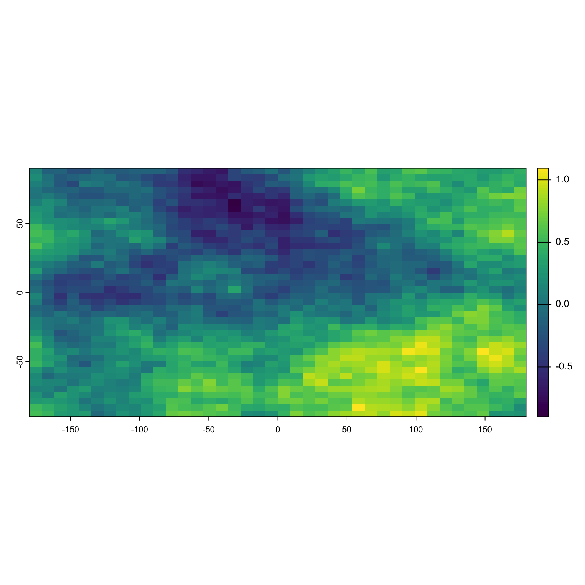
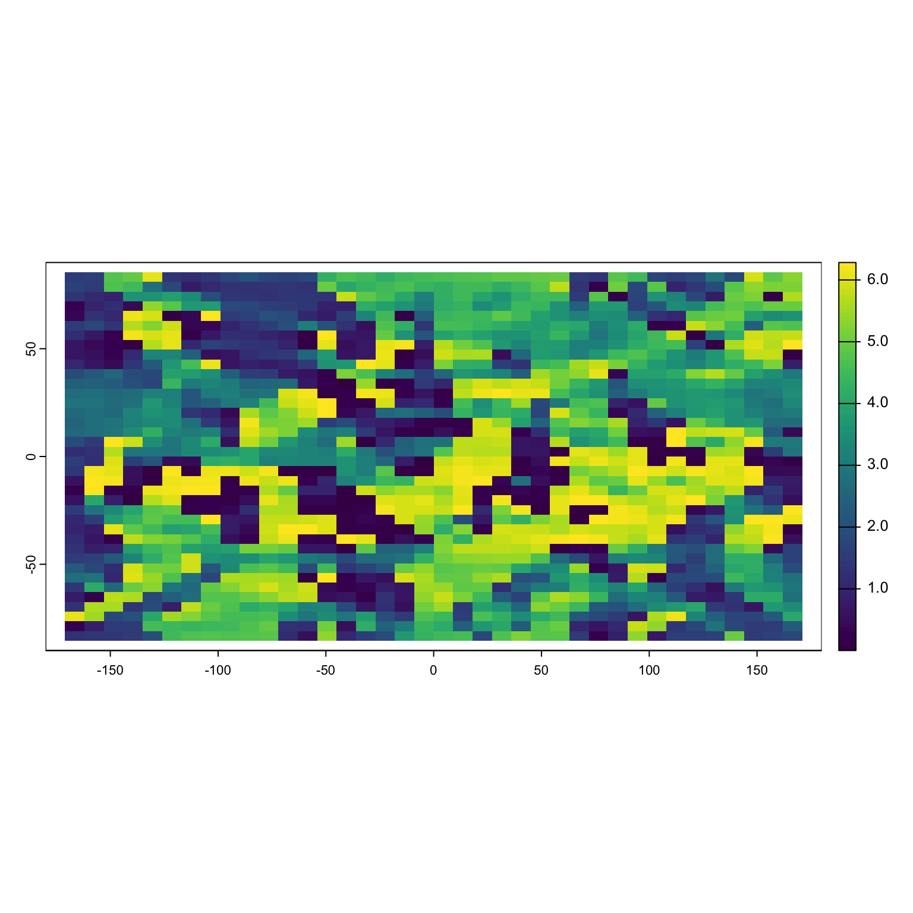
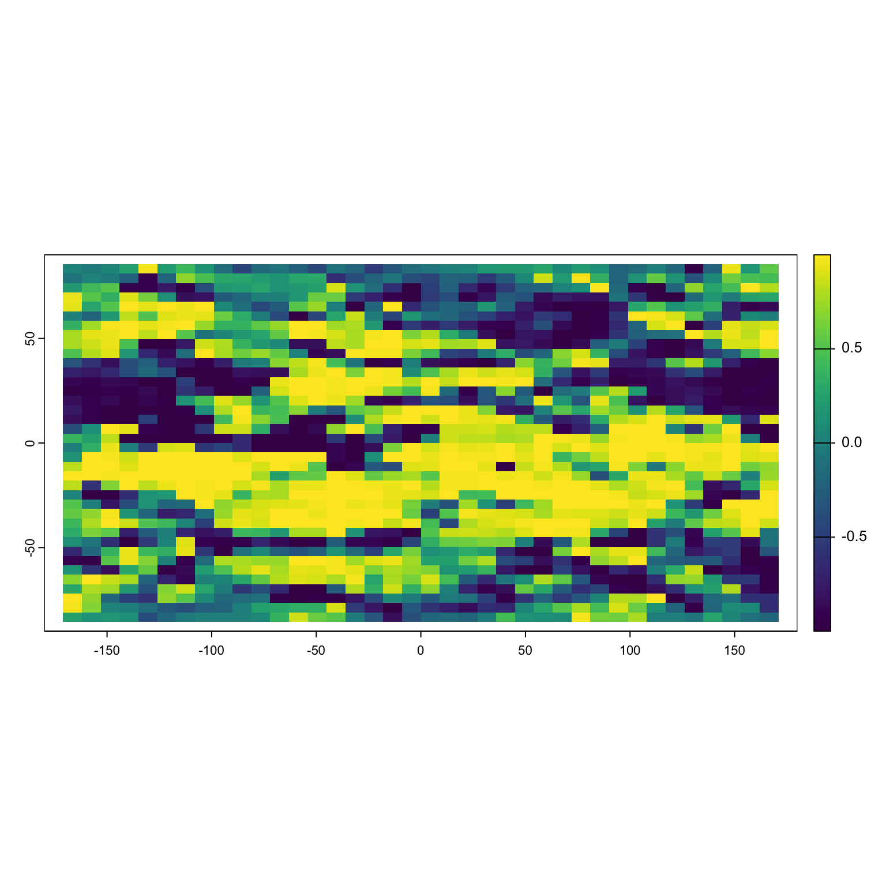
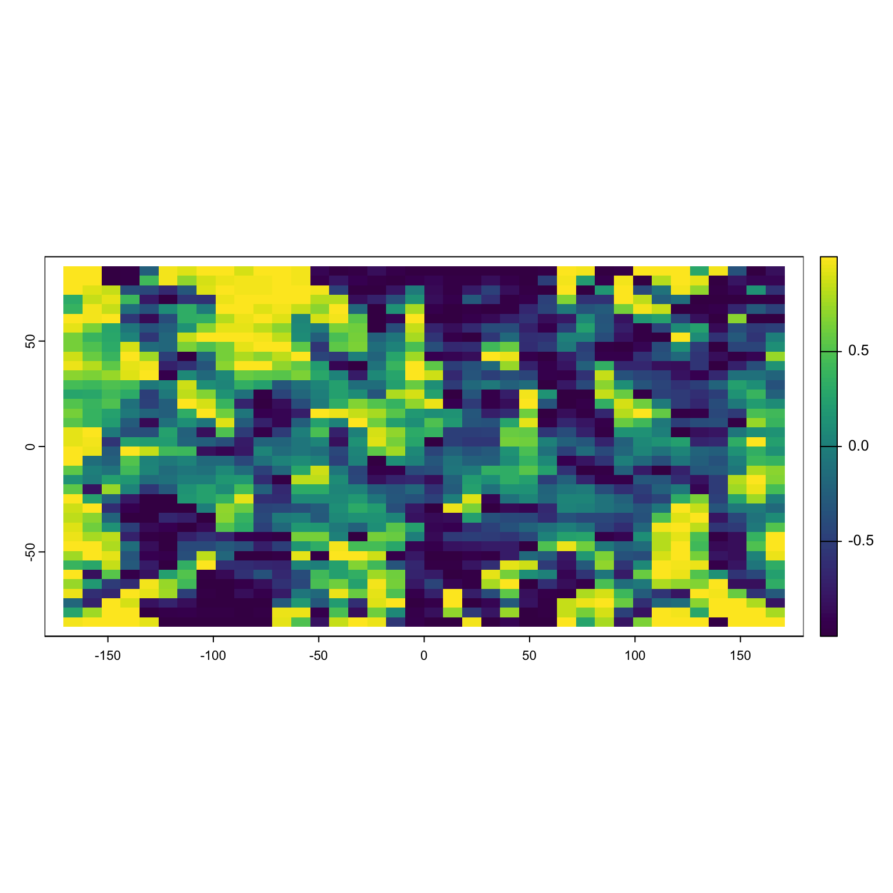
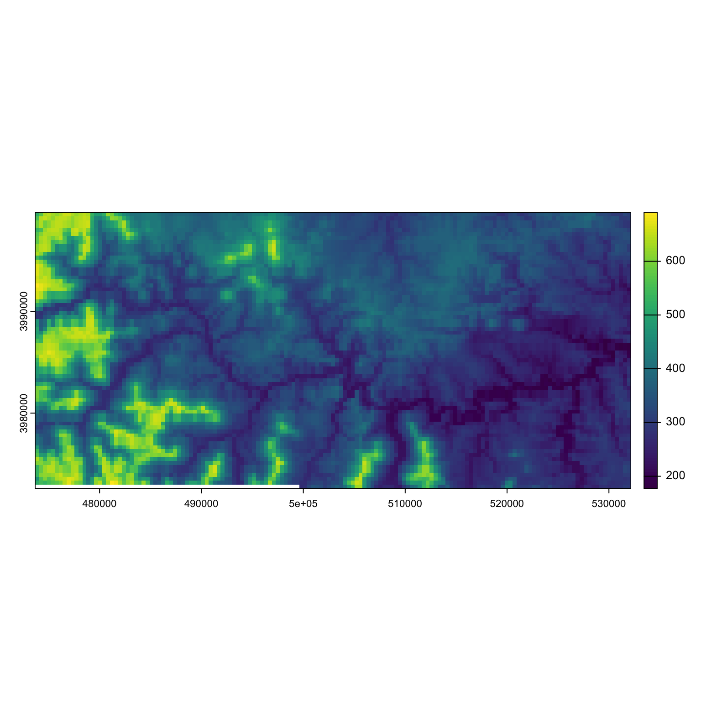
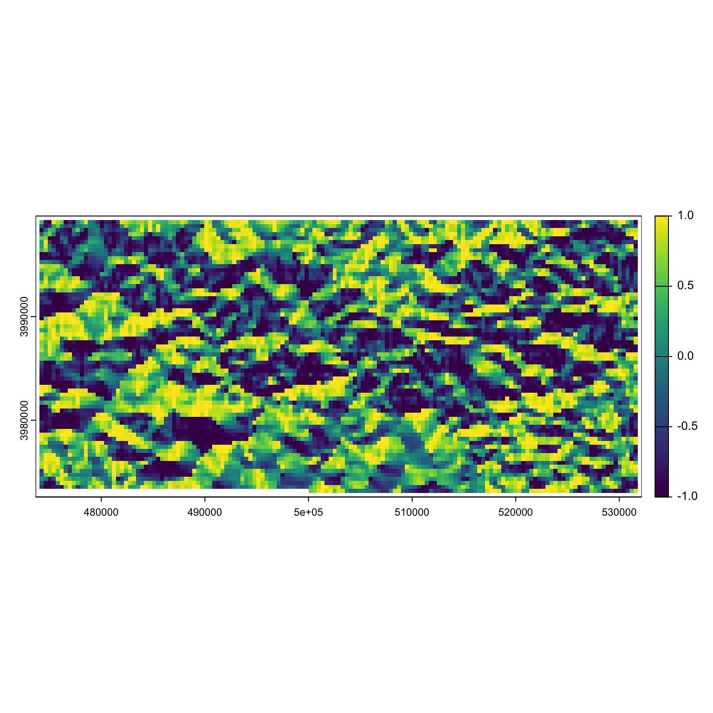
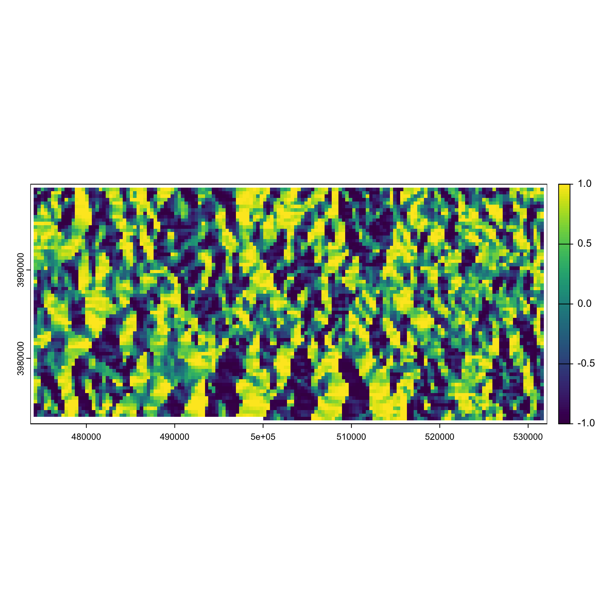
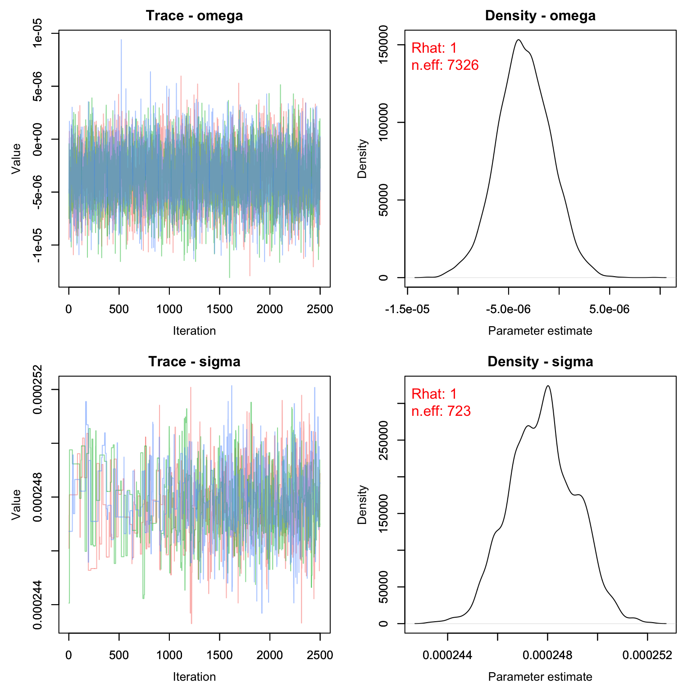

Lab8: Resource Selection Functions
Lab8_Movement.RmdIn this activity we’ll learn how to construct a simple resource selection function in a Bayesian framework.
Objectives
Learn how to convert landscape metrics into partial derivatives
Run a simple resource selection function in Nimble
What is a resource selection function?
Resource selection functions (RSFs) are a class of functions that are used in spatial ecology to assess which habitat characteristics are important to a population or species.
Most RSF literature thinks about selection at 4 scales:
First order selection: The entire range of a species
Second order selection: The home range of an individual or group of animals
Third order selection: Resource or habitat usage within an individual’s or group’s home range
Fourth order selection: The procurement of specific resources, such as food, at specific sites
Habitat Gradients
While we often think of continuous environmental covariates as the value of that covariate (percent tree cover, proportional early successional agriculture, distance to road, etc.) at a specific location, another way to consider the world is to think of the relative difference between any one location and the locations around it. We can do this using potential functions. Potential functions provide a straightforward mathematical framework for movement along environmental gradients.
Much like a marble rolling along a hilly surface, potential functions can steer movements towards (or away from) particular habitat features based on their gradients. The gradient is a vector field of partial derivatives pointing in the direction of the greatest rate of increase in the habitat covariate. In simple language, we essentially want the cosine and sine of the aspect of our surface. This requires first calculating the aspect (what angle the slope of our landscape is facing).
Here’s what that might look like in a realistic landscape. Imagine we are interested in the role that canopy cover plays in habitat selection for spotted skunks. We go to our favorite data warehouse and acquire a canopy cover layer. Interestingly, it looks exactly like this simulated dataset after scaling:
set.seed(55)
library(terra)
delta <- 0.025 ## Resolution
grid0 <- seq(delta/2, 1-delta/2, delta)
grid <- cbind(rep(grid0, each=length(grid0)),
rep(grid0, times=length(grid0)))
distmat <- as.matrix(dist(grid))
npixels <- nrow(distmat)
## Covariance matrix
V <- exp(-0.4*distmat)
R <- chol(V)
X <- t(R) %*% rnorm(npixels)
Canopy <- rast(nrows = length(grid0), ncols = length(grid0))
Canopy[] <- X[,1]
plot(Canopy)
First, we want the aspect of this beautiful landscape. We can do this easily in the terra package.

The resulting graph is weird, but it indicates what direction the slope of the raster is facing for each pixel. A value of 1.5 (90°) indicates that movement straight up would take me to higher values. A value of 3.14 (180°) says going left would take me to higher values. A value of (0) 0° says “nope, I’m at the highest point in the nearby area!”
Now we can take these values and get the easting (is the value higher to the left or right?) and the northing (is the value higher in the up or down direction?). To take you back to high school math, the cosine of an angle will tell you the relative x value and the sine will tell you the y value.
Positive values of cosine(x) tell you to go right, negative till you to go left. Note that R expects the input to be in radians, not degrees.

Positive values of sine(x) tell you to go up, negative till you to go down. Note that R expects the input to be in radians, not degrees.

Why does this matter?
One thing that’s difficult about resource selection is that we have to consider two different things at once - what the animal chose (based on movement data) and what the animal could have chosen but didn’t (aka, availability of other habitat). By using partial derivatives, we can model these at the same time! This is something that is rarely done in classic RSF functions and it leads to all sorts of mathematical headaches.
RSF Models
Now that we’ve learned how to find the partial derivatives of our landscape, let’s put them into practice. Recall our model for Brownian Bridge movement:
\Large \mu_t = \mu_{t-1} + \epsilon_{t} \sim Normal(0, \sigma^2)
We can add in a parameter that predicts our next location based on the environmental conditions at our current location.
\Large \mu_t = \mu_{t-1} + \omega*\nabla(\mu_{t-1}) + \epsilon_{t} \sim Normal(0, \sigma^2) Where \omega is the strength of the response to the habitat gradient and \nabla(\mu_{t-1}) is the habitat gradient at the previous location (\mu_{t-1}). For x coordinates, \nabla(\mu_{t-1}) = cos(aspect) and for y, \nabla(\mu_{t-1}) = sin(aspect).
Let’s go back to our example of the collared deer from lab and see how deer movement responds to elevation. Due to some rds irregularities, our raster is currently saved as a matrix for the time being.

Let’s grab the aspect, easting and northing of this raster:
aspect <- terra::terrain(dem, "aspect", neighbors = 8, unit = 'radians')
easting <- cos(aspect)
northing <- sin(aspect)
plot(easting)
plot(northing) Let’s get our nimble model written up:
pd_walk <- nimbleCode({
for(i in 1:nind){
s[i,1,1] ~ dunif(xmin, xmax)
s[i,2,1] ~ dunif(ymin, ymax)
for(t in 2:nTelemetry[i]){
s[i,1,t] ~ dnorm(s[i,1,t-1] + omega*easting[i,t-1], sd = sigma)
s[i,2,t] ~ dnorm(s[i,2,t-1] + omega*northing[i,t-1], sd= sigma)
}
}
sigma ~ dgamma(1,1)
omega ~ dnorm(0, 1)
})Side note: If we had to name this model for a manuscript, we could call it an approximate Langevin diffusion movement model. But anyway.
Let’s clean up our data. We will also need to know the easting/northing value for each location we have in our dataset.
data(collars)
collars$Collar.ID_f <- as.numeric(as.factor(collars$Collar.ID))
nind <- length(unique(collars$Collar.ID_f))
collars$easting <- terra::extract(easting, collars[,c('x','y')])
collars$northing <- terra::extract(northing, collars[,c('x','y')])
nTelemetry <- as.vector(table(collars$Collar.ID_f))
s <- array(NA, c(nind, 2, max(nTelemetry)))
east <- north <- array(NA, c(nind, max(nTelemetry)))
for(i in 1:nind){
me <- collars[collars$Collar.ID_f == i,]
s[i,1,1:nTelemetry[i]] <- me$x/1e6
s[i,2,1:nTelemetry[i]] <- me$y/1e6
east[i,1:nTelemetry[i]] <- me$easting$aspect
north[i,1:nTelemetry[i]] <- me$northing$aspect
}
xmin <- min(s[,1,], na.rm = T)-1 #add some space around locations
xmax <- max(s[,1,], na.rm = T)+1 #add some space around locations
ymin <- min(s[,2,], na.rm = T)-1 #add some space around locations
ymax <- max(s[,2,], na.rm = T)+1 #add some space around locationsTime to setup for nimble:
consts <- list(xmin = xmin, xmax = xmax, ymin = ymin, ymax = ymax, nind = nind, nTelemetry = nTelemetry, northing = north, easting = east)
dat <- list(s = s)
inits <- function(){list(sigma = rgamma(1,1,1), omega = rnorm(1))}
params <- c('sigma', 'omega')And run!
rsf_out <- nimbleMCMC(code = pd_walk,
data = dat,
constants = consts,
inits = inits(),
monitors = params,
thin = 1,
niter = 5000,
nburnin = 2500,
nchains = 3,
samplesAsCodaMCMC = TRUE
)
MCMCvis::MCMCtrace(rsf_out, pdf = F, Rhat = T, n.eff = T)
MCMCvis::MCMCsummary(rsf_out, Rhat = F, n.eff= F)*1e6
#> mean sd 2.5% 50% 97.5%
#> omega -3.461 2.633 -8.704 -3.519 1.692
#> sigma 247.796 1.333 245.309 247.811 250.368There appears to be a slight negative effect of elevation on deer movements. In other words, deer are more likely to move towards areas with lower elevation or to stay at about the same elevation range as their previous location.
Homework
-
In the WILD8370 package, you’ll find a dataset called
coyote_moves. This object contains a named list. The first list is some data collected by Dr. Chamberlain et al from collared coyotes. The second is the matrix version of a raster containing information about the distance to roads (in meters). The EPSG code for this raster is 4326. Use this data to fit an RSF like we did above to this new dataset. Several steps will be required:- Make sure the points are in order by date for each individual
- Convert Latitude and Longitude to UTMs (EPSG 4326 aka UTM 17N)
- Find the easting and northing values for each collar location based on the aspect of the roads tif
Using the deer collar data, fit a correlated random walk (see slide 16 from lecture for a refresher). Report your estimates for \gamma and \sigma.
On a 1-10 scale, with 1 being the worst week ever and 10 being the best, how would you rate this week’s content? What lingering questions/confusion about the lecture or lab do you still have?